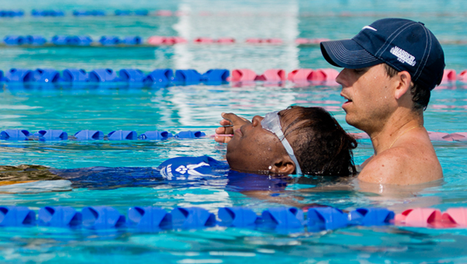
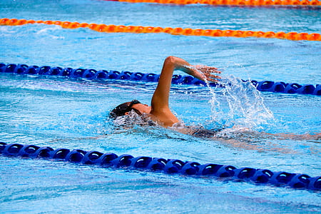
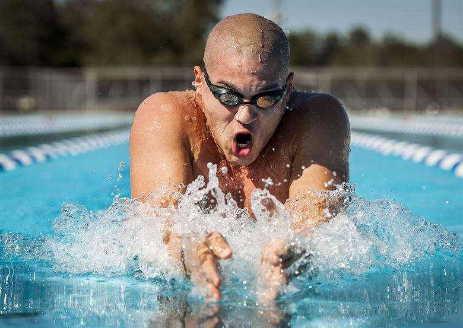

L’adulto cerca lo sport, non tanto per raggiungere un certo tipo di prestazione ma per trovare benessere fisico e mentale, quindi oltre al carattere motorio, l’attività dovrà essere orientata agli aspetti sociali.
Sia che tu svolga questo sport da autodidatta o attraverso corsi di nuoto per adulti, è giusto informarsi ed avere consapevolezza del proprio corpo. E’ sempre quindi opportuno affidarsi a chi ne sa più di noi, per evitare infortuni causati da una mal esecuzione tecnica della nuotata (che avviene molto spesso!) E’ utile quindi poter avere un istruttore che controlli le nostre esecuzioni e che ci possa correggere ed insegnare l’esercizio giusto, perchè quello che noi cerchiamo è lo “stare bene” con noi stessi e con gli altri.L'istruttore
Rispetto al lavoro con i bambini e ragazzi gli adattamenti sono più lenti e difficoltosi è quindi opportuno ridurre il numero di esercizi ed aumentare le ripetute, concentrandosi maggiormente sul gesto tecnico. In questo caso l'adulto dovrà instaurare un rapporto di fiducia reciproca con il proprio istruttore basato sulla credibilità e sulla coincidenza di obiettivi e risultati. L'istruttore deve essere quindi preparato, serio e credibile e deve avere anche ottime abilità comunicative.
All'interno di una scuola nuoto, l'adulto ha la possibilità di iscriversi a diversi corsi impostati in base alle capacità, esistono 3 possibili livelli:
Principiante
In questo livello l’individuo avrà paura dell’acqua e quindi non sarà in grado di entrare o magari di andare in una vasca profonda. Non saprà gestire la respirazione e il galleggiamento.
E’ importante quindi iniziare gradualmente con ad esempio della ginnastica leggera in cui non è necessario immergere il viso e i piedi sono ben ancorati a terra, possono essere usati strumenti di supporto, come tubi o cinture galleggianti. Si cercherà progressivamente di far apprendere la respirazione frontale e il galleggiamento prima statico e poi dinamico.
Intermedio
L’individuo sarà in grado in galleggiare liberamente anche in acqua profonda per garantire una sua maggiore sicurezza.
Saprà respirare frontalmente e lateralmente,
nuotare stile libero e dorso completo e l’insegnamento avverrà prima in forma grezza ( nuotata semplice) e poi in forma fine (sviluppo della tecnica).
Avanzato
Nell'ultimo livello si eseguono esercizi mirati alla tecnica grezza per tutti e 4 gli stili, affinano virate e subacquee.
Si aggiungono infatti stili come la rana, che risulta essere la più istintiva ed anche il delfino, in particolare la gambata.